Notas de estudo
O problema de regressão
Regressão é o nome dado a processos estatísticos que tem como objetivo encontrar uma relação entre um conjunto de variáveis, descrevendo essa relação através de uma função.
Um conjunto de variáveis tem a forma 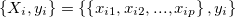, onde xi1, xi2, ... são chamadas de variáveis explicativas e yi de variável dependente. Partimos da suposição de que y depende de X e que há relação entre yi e as variáveis explicativas. Um conjunto composto por vários conjuntos de variáveis é chamado de DATASET:
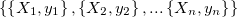
A regressão linear é um método de regressão amplamente conhecido, onde o palpite é de que a função que se ajusta ao conjunto de variáveis é uma composição linear de parâmetros. Em uma regressão linear simples ainda pode existir um termo independente.
Os algoritmos desenvolvidos neste site funcionam construindo expressões lineares, mas cada algoritmo realiza esse processo utilizando uma abordagem diferente. Estes detalhes serão apresentados mais a frente.
Um modelo geral de regressão linear para um conjunto de variáveis 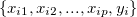 é:
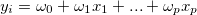
A estrutura de dados IT
A estrutura de dados IT guarda internamente um conjunto de expoentes e uma operação:
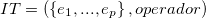
O conjunto de expoentes tem sempre o mesmo tamanho de Xi, e as possíveis operações são:
identidade, seno, cosseno, tangente, valor absoluto, raiz quadrada, exponencial e logaritmo
Por se tratar da unidade elementar para construir todas as expressões lineares, esta estrutura deve ser interpretada como um número em função das variáveis explicativas. Seu valor numérico é calculado a partir de um valor do DATASET: primeiro, dado um conjunto Xi, eleva-se cada um dos elementos de Xi ao expoente ei (pertencente ao conjunto interno de expoentes). Após isso, todos os valores obtidos são multiplicados e, por fim, a operação da estrutura é aplicada em cima do valor obtido:
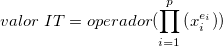
Então cada expressão formada sempre será uma expressão linear () onde cada termo xi é uma estrutura IT multiplicada por um coeficiente.
A estrutura de dados IT possui limitações que impede que algumas funções possam ser criadas. Todos os algoritmos se baseiam nessa estrutura de dados, e suas expressões são compostas somando várias estruturas IT. Tome como exemplo a estrutura IT para um problema de 3 variáveis, e sua correspondente forma matemática:
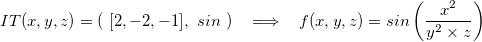
O algoritmo compôe uma expressão somando várias estruturas IT, onde cada uma tem um coeficiente. Isso quer dizer que toda expressão será da forma:
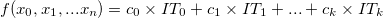
Cada estrutura IT representa um termo. Uma possível equação que o algoritmo pode encontrar é:
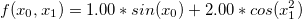
Mas perceba que a expressão:
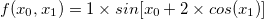
nunca será formada, pois uma estrutura IT está contendo outra estrutura IT. Por não ser possível formar a expressão, sua solução exata nunca será encontrada, embora possa existir alguma outra expressão que minimize o erro e consequentemente apresente um bom score. Abaixo estão mais alguns exemplos de expressões que não podem ser encontradas pelos algoritmos:
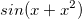
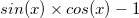
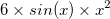
De um ponto de vista, isso limita o campo de busca, que ao contrário do algoritmo genético, não tem restrições na forma das expressões. Mas, por outro lado, são improváveis os casos onde a equação que rege os dados de entrada possa ter várias funções encadeadas:
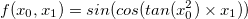
Além disso, ainda evita que expressões extremamente complexas sejam criadas e eventualmente selecionadas por acabarem se ajustando bem aos pontos de entrada. Isso garante uma maior simplicidade nos resultados.
Algoritmos implementados e seus funcionamentos
Os três algoritmos implementados no site tem execução rápida, sem perder a capacidade de encontrar uma solução adequada quando esta existe e é possível de ser encontrada dentro dos parâmetros de cada algoritmo. Cada um dos algoritmos funciona baseado em um princípio diferente, mas todos compôem suas expressões com a mesma estrutura de dados, a estrutura Interaction Transformation (IT).
Para qualificar as expressões criadas pelos algoritmos, usamos o score. O score é uma classificação para a expressão, de acordo com o quão bem esta expressão se ajusta ao DATASET de entrada, e varia de 0 a 1. O score é calculado por:

Onde o MAE (desvio médio absoluto) é igual ao somatório das diferenças entre os valores da variável dependente yi e os valores calculados pela expressão para Xi:
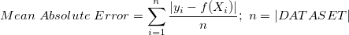
O algoritmo SymTree
Este algoritmo inicia sua busca a partir de uma solução representando uma regressão linear. A cada iteração ele aplica as operações de interação entre as variáveis e transformação, gerando funções incrementalmente mais complexas. Esse algoritmo é executado por oito iterações. Mais detalhes pode ser visto em:
abordagem: busca gulosa.O algoritmo IT-LS
O algoritmo funciona criando uma população inicial de expressões aleatórias e selecionando a melhor dentre elas. Após isso, executa uma busca local na equação, mudando ou as funções não-lineares ou os expoentes da equação, repetindo o processo até que não exista uma modificação que melhore ainda mais o score da equação. Esse algoritmo é executado até no máximo 50 iterações.
Abordagem: busca local (problema: mínimo local).O algoritmo IT-ES
O algoritmo funciona criando uma população de expressões aleatórias, e então executa um algoritmo de Estratégia Evolutiva ES-(mu, lambda). Esse algoritmo foi executado apenas com mutação, mu=150,lambda=45 e 150 iterações
Abordagem: mutação e seleção por torneio como elemento para busca (problema: fator aleatório).